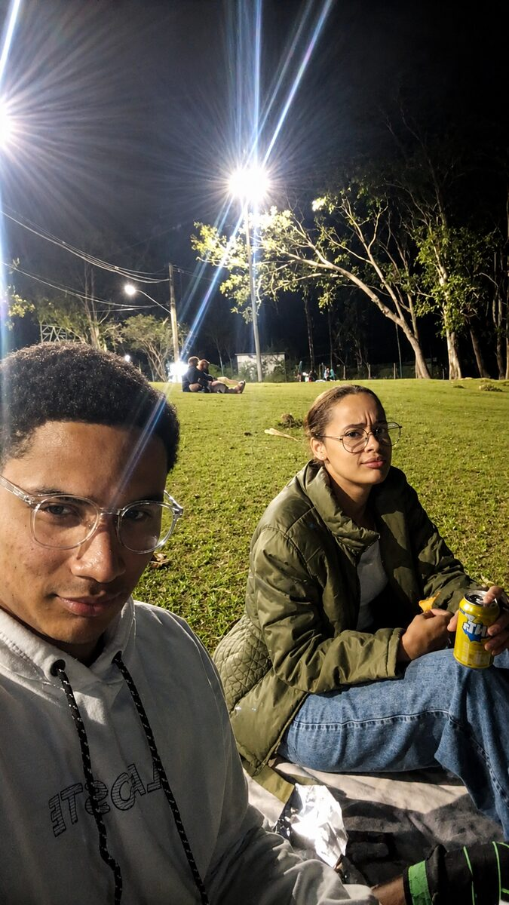
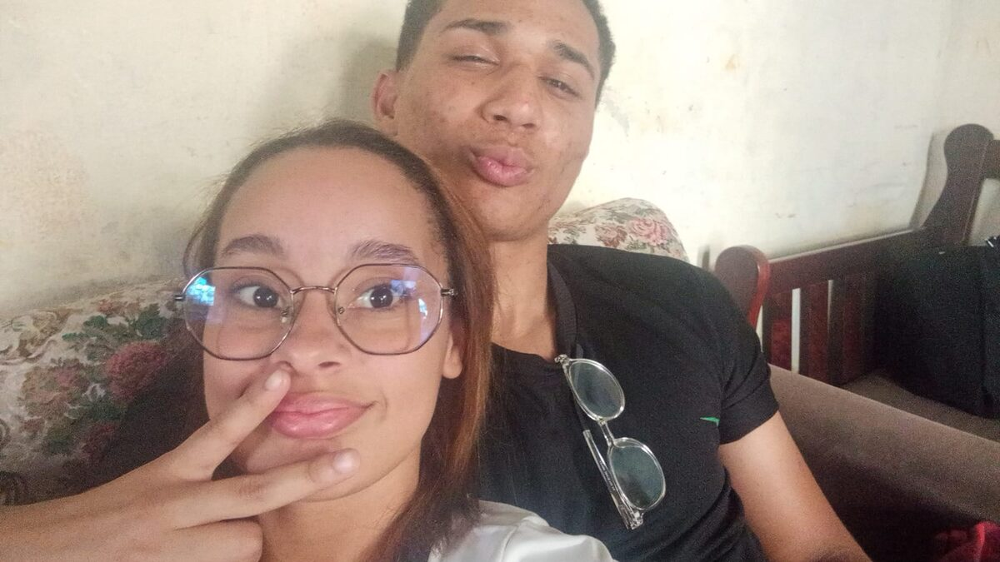
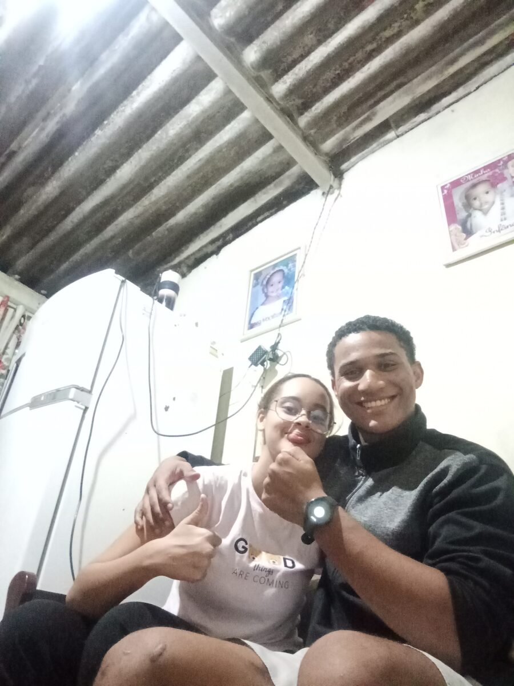
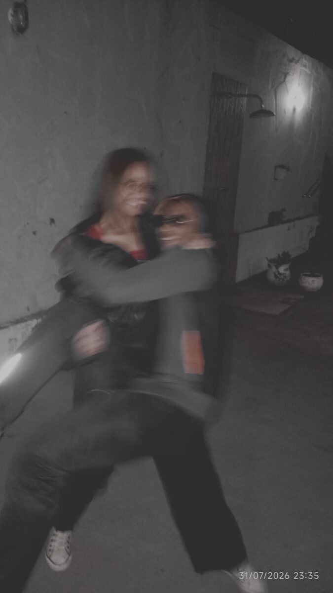
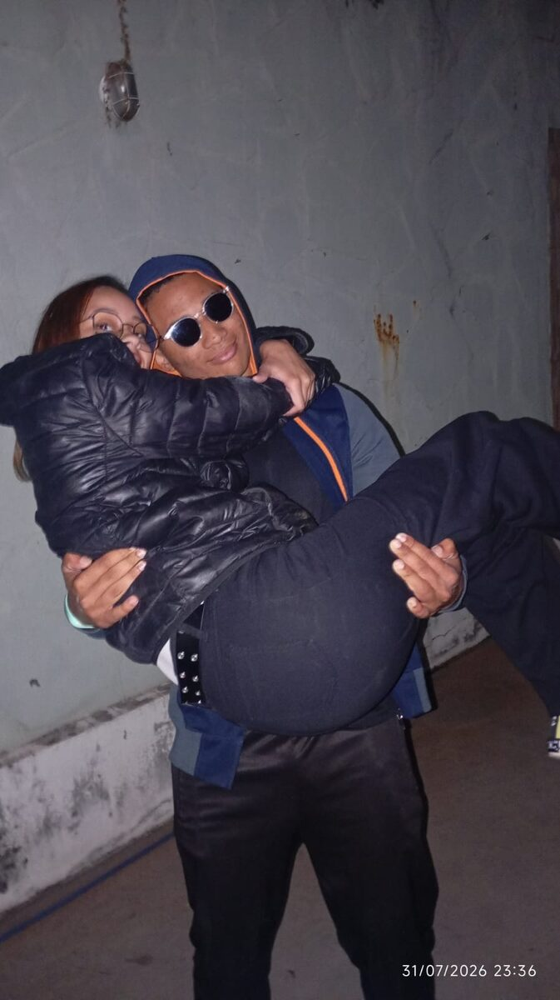

só nós dois
Nossos
momentos.
Cada foto dessa é um motivo pra eu não querer te perder de vista de novo. Olha quanta coisa boa a gente já viveu.





♡
Quero mais fotos
como essas.
Com você, do jeito certo, prestando atenção em quem importa.
← voltar pro início